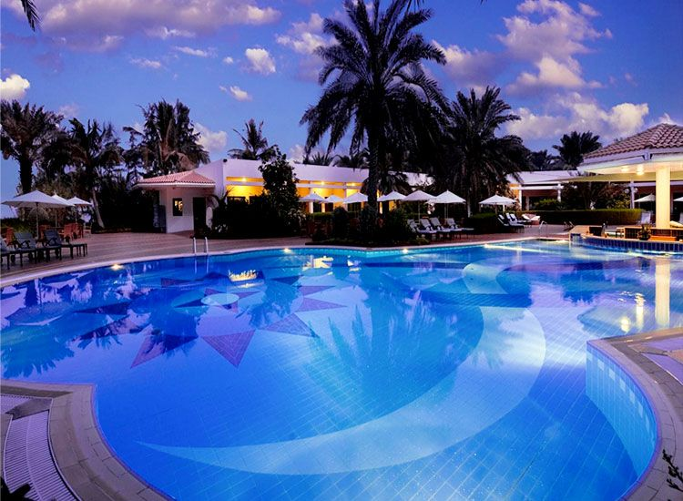
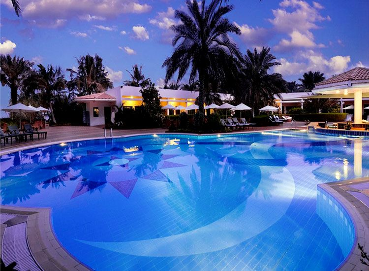
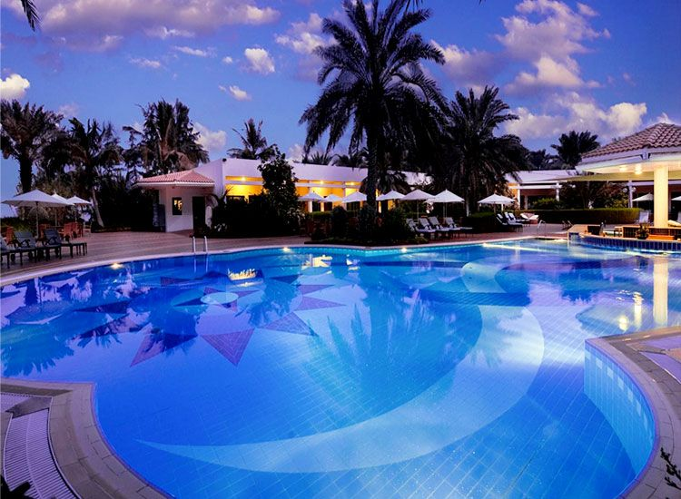

Goa Tourism
| Home | About Us | Gallary Page | Sports in Goa | Places to Visit | Contact Us |

Goa is a famous place for tourism and it has many beaches for kids and teenagers to play, relax and make sand castles there. You can play several water sports in Goa such as windsurfing, rafting, kite surfing, wakeboarding, swimming, flyboarding, zorbing, banana boat, knee boarding, paddle boarding, and lastly scuba diving. There are many normal, luxury resorts, and restaurants that provide you deilcious food for both vegetarians and non vegetarians.